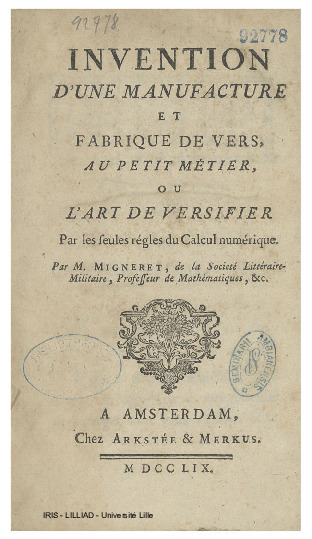
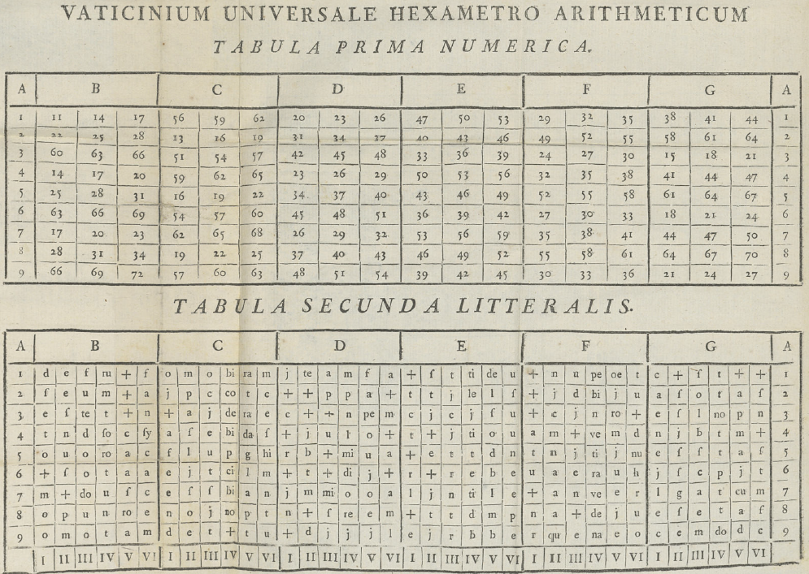

In February 2023, just a few months before he died, my dear friend Antoine de Falguerolles sent me an email and a 1759 pamphlet by Pierre-Jean Migneret, Invention d’une Manufacture et Fabrique de Vers, au Petit Métier, ou l’Art de Versifier par les Seules Règles du Calcul Numérique, that he said might be “the first pamphlet against ChatGPT.” Characteristically, he framed it as “a non-serious contribution”. But, when I recently translated and read this, I thought, “holy moly, it actually anticipates so many aspects of modern AI, that it is worth a closer look.”
This was so typical of Antoine. He got me interested in the history of data visualization: the first time we met in Toulouse, he showed me the 1864 volume of the Albums de Statistique Graphique, containing beautiful statistical graphics I never thought existed. I was instantly hooked on datavis history.
We later formed Les Chevaliers to purchase an entire collection of these albums, published by Émile Cheysson for the Ministry of Public Works in France, 1879–1899. Over many years, Antoine would toss me many, many historical nuggets: the address in Paris where Charles Joseph Minard lived (32 rue du Bac); where Minard was buried (Montparnasse Cemetery, Paris); the birth certificate of André-Michel Guerry which helped me track down his genealogy, and so on.
I could go on. But the point is not the list. It’s the cast of mind behind it: the statistician and historian who kept finding things that mattered, and sharing them with characteristic lightness. This one, it turns out, mattered more than either of us realized.
Migneret and his pamphlet
Pierre-Jean Migneret was a mathematics teacher and accountant, but not, as far as we know, a famous one. By 1798 he had published a textbook on commercial arithmetic; the 1759 pamphlet is his one brush with something larger. The full title announces it cheerfully: Invention d’une Manufacture et Fabrique de Vers, au Petit Métier, ou l’Art de Versifier par les Seules Règles du Calcul Numérique—a factory for making verses, on a small loom, by the rules of arithmetic alone. Isn’t that ChatGPT without the loom?

The fancy title page says “Published by Arkstée & Merkus, Amsterdam, 1759” — or so it claims. Arkstée & Merkus were real publishers, operating in Amsterdam and Leipzig, but a Dutch imprint on a French pamphlet was a common precaution for works that might offend someone; the true printer is unconfirmed. A satirical pamphlet debunking religious oracles had reason for a little cover.
The brief preface—the Avertissement—is candid about how this thing came to exist. Migneret had planned something grander, a large folio volume. The printer talked him down: “even if your book were a foolish trifle (une sottise) of the moment, I’d be sure to sell it”—provided it came as a slim brochure. A fire then destroyed his larger plans anyway. He accepted the smaller format. But notice: Migneret adopts the printer’s word sottise without a trace of embarrassment. He’s advertising his own work as a learned trifle. The satirical intent is declared on the very first page. I’m sure Antoine had a chuckle over this.
What is Migneret actually arguing? He states his thesis directly, around page 7:
Les prêtres des payens ne forgeoient pas non plus les oracles. Ils ne faisoient que les tirer d’une table numérique, & la combinaison résultante de diverses opérations arithmétiques, faisoit avoir une réponse vaguement relative au sujet de la question.
Translated:
The pagan priests did not invent the oracles. They merely drew them from a numerical table; the combination resulting from various arithmetical operations then produced a response vaguely related to the subject of the question. Oracle responses were, in his phrase, “réponses vagues, accommodées à l’alternative de l’événement”—vague answers calibrated to fit either outcome.
This reminds me so much of ELIZA, the world’s first AI chatbot. Developed by Joseph Weizenbaum at MIT between 1964 and 1967, it simulated conversation using pattern-matching and substitution, most famously adopting the persona of a psychotherapist in a script called “DOCTOR”.
Migneret is doing Enlightenment demystification in the tradition of Fontenelle’s Histoire des Oracles (1687), which he cites explicitly. But Fontenelle had simply argued that oracles were fraud; Migneret goes a step further and demonstrates the mechanism for producing replies to prompts without knowing anything of substance. Was this ChatGPT v0.1?
His pamphlet contains a working algorithm: a proof of concept that anyone can operate. Migneret knew exactly what he had done: he could have written an R or Python function, Oracle(inputtext) if time travel had been available to him. But there is more to Migneret’s bravado: Buried in the preface is a quiet boast: the best mathematicians of his day would perhaps have declared it impossible to produce Latin verses by arithmetic alone. He pulled it off anyway.
The Oracle at work
Let’s see what Migneret’s Oracle machine actually produces. Antoine worked through two examples with a question posed to the Oracle, and its response, both in Latin:
| Question | Oracle response |
|---|---|
| Celui que j’aime deviendra-t-il mon époux? | Ecce equidem licitæ prædicit talia numen. |
| La paix sera-t-elle prochaine et avantageuse aux Français? | Credo satis licitæ, donabit fœdera numen… |
Translated:
Q: Will the one I love become my husband? A: Behold, the god foretells such things as are permitted.
Q: Will peace be near and advantageous to the French? A: I think it fair enough; the god will grant a treaty.
Both answers are perfectly oracular: confident-sounding (like the Oracle of Delphi), Latin (to make it mystic), and applicable to almost anything. Just like ELIZA!
How the machine works
Here is how Migneret built his Oracle machine, as far as I can tell. The section Instruction sur la manière de travailler (pp. 28–34) walks us through every step. Let’s follow the first question (Q) through all six.
Step 1—Normalize the question to exactly nine words. Nine is the key number throughout: nine word-scores, a nine-digit key, a nine-row triangle, six words of a Latin hexameter. The standardized Q becomes: Celui que j’aime deviendra-t-il cette année mon époux?
Step 2—Encode each letter as a number. Migneret’s Table Alphabéti-Numérique assigns A=1, B=2, … Z=23 (no J, no W, no X—the table follows 18th-century French orthography). Letters within each word are summed:
C e l u i
3 5 11 20 9 → 48
q u e
16 20 5 → 41
j a i m e
9 1 9 12 5 → 36
… and so on for all nine words …Language in, numbers out. Whatever the question actually means is already irrelevant.1
48 41 36 79 20 51 37 39 ?
Celui que j'aime deviendra il cette année mon épouxStep 3—Compress each score modulo 9. Divide by 9, keep the remainder; a remainder of zero becomes 9:
Word sum mod 9
Celui 48 3
que 41 5
j'aime 36 9 (0 → 9)
deviendra 79 7
il 20 2
cette 51 6
année 37 1
mon 39 3
époux ? 3
─────────────
nine-digit key: 3 5 9 7 2 6 1 3 3By this point, whatever the question meant has been completely discarded. “Will I marry him?” and “Will France win the war?” each survive only as nine digits between 1 and 9—different digits, but equally stripped of content. And, that’s the point!
Step 4—Mix these in a triangle. Apply the same mod-9 operation to adjacent pairs, row by row, building a downward triangle of 9 rows:
3 5 9 7 2 6 1 3 3
8 5 7 9 8 7 4 6
4 3 7 8 6 2 1
7 1 6 5 8 3
8 7 2 4 2
6 9 6 6
6 6 3
3 9
3Nine layers of mixing. Each row is computed from its predecessor, so a change in any single word ripples outward through the triangle. By the bottom, every digit has influenced every other. Step 3 discarded the question’s meaning; Step 4 scrambles the arithmetic residue too, so the output indices carry no recoverable trace of the original input. A numerical magic trick. Voila!
Modern deep learning does something structurally similar. In a transformer, each layer mixes information across all positions through attention, progressively entangling the original tokens until the output is a function of the entire input. Migneret’s triangle is a pocket-sized version of the same intuition: iterate a simple mixing operation until nothing from the original survives intact.
Step 5—Extract six band indicators from the triangle. Reading specific positions of the completed triangle yields six index values — one for each word of the output hexameter — each a digit between 1 and 9. As best I can reconstruct from the worked example in the pamphlet, for our question they are:
Ligne: I II III IV V VI
Band: 3 9 3 6 2 3
Word: ecce equi- lici- præ- tal- nu-
dem tæ dicit ia menEach value selects a horizontal band (row) of the Tabula Prima Numerica used in Step 6.
Step 6—Look up the verse. Two tables do the final work. The Tabula Prima Numerica maps each index to a section (A–G); the Tabula Secunda Litteralis gives the corresponding letter or letter-pair at that position. Cells marked “+” are skipped. Reading the surviving letters in order spells one word. This is repeated for six triangle rows—one word per row—and the six words concatenate into the hexameter. That is the only part of the system requiring genuine creative labor: Migneret had to fill the letter table so that whatever combination the arithmetic produces assembles into plausible Latin. Everything else is arithmetic.

What was he thinking? Not, surely, that he had built a useful oracle. The point is the demonstration: show the mechanism, expose the trick. Any oracle could be built this way. The god in the machine is arithmetic.
The LLM parallel
And here’s where this gets interesting: the parallel to modern LLMs is hard to dismiss. Step by step, Migneret’s system maps onto what modern language models do—not metaphorically, but structurally. Both take natural language in, convert it to numbers, transform those numbers through several layers of arithmetic, and look up the result in a pre-assembled table. The differences are real, and we’ll get to them. But first, the resemblance:
| Migneret (1759) | Modern LLM |
|---|---|
| Reword question to 9 words | Tokenization / prompt formatting |
| Letter → number table | Token embeddings |
| Word sums | Weighted feature aggregation |
| Triangle mod-9 operations | Layer-by-layer transformation |
| Column index lookup | Sampling from output distribution |
| Letter & digram lookup table | Learned weight matrix |
The steps involve:
Input normalization. Before either system does anything, it imposes structure on raw input. Migneret requires exactly nine words; an LLM tokenizes the prompt (splitting words into subword units) and formats it according to a template. Neither processes language as-is—both demand it arrive in a specific form first.
Symbol → number. Both convert discrete symbols to numbers as their first real operation. Migneret’s Table Alphabéti-Numérique assigns one integer per letter. An LLM’s embedding layer assigns one high-dimensional vector per token—hundreds or thousands of numbers rather than one. The dimensionality differs by orders of magnitude; the operation is the same.
Aggregation. Both combine those numbers into a summary representation per unit. Migneret adds the letter values within each word. LLMs compute weighted sums across token embeddings using learned attention weights. Migneret’s weights are all equal (plain addition); an LLM’s are learned from data. But the category of operation—aggregate component values into a single score—is identical.
Iterated mixing. Both run the aggregated values through multiple rounds of transformation. Migneret’s triangle applies the same mod-9 operation nine times, row by row, until the original structure is thoroughly scrambled. An LLM passes representations through dozens or hundreds of transformer layers, each mixing information across all positions. The depth differs enormously; the principle—iterate until the output is a complex function of the entire input—does not.
Index lookup. Both reduce their transformed representation to a set of indices into a table of outputs. Migneret reads one value from each column of the triangle; an LLM computes a probability distribution over its vocabulary and samples a token. Migneret’s lookup is deterministic; an LLM’s introduces controlled randomness (temperature). But the logical structure—transform input to pointer, use pointer to select output—is the same.
The table itself. In Migneret, the stored “knowledge” is a table of individual letters and letter-pairs—hand-crafted so that whatever combination the arithmetic produces assembles into plausible Latin hexameter. In an LLM, the weight matrices play the same role: a static structure, assembled in advance, that maps indices to outputs. The sub-word units in Migneret’s table (single letters plus digrams like qu, ra, te, di, ci) are strikingly close to modern byte-pair encoding (BPE)—the tokenization scheme used by GPT-2 and its successors, which also stores a vocabulary of characters and common letter-sequences and assembles output by concatenating them. Migneret compiled his table by hand. An LLM’s was assembled by training on essentially all of human writing. The scale differs by nine or ten orders of magnitude. The architecture does not.
Then and Now
Migneret was not building an oracle. He was debunking one—demonstrating, by construction, that the appearance of divine knowledge requires nothing more than a lookup table and arithmetic. The pagan priests hadn’t communed with the gods; they had run an algorithm. His pamphlet is the proof: here is the mechanism, anyone can operate it, observe the oracle you get.
Replace “pagan priests” with “large language models” and the argument is essentially unchanged. ChatGPT doesn’t commune with human knowledge; it runs an algorithm—vastly more complex, but the same category of trick. Its outputs are, in Migneret’s phrase, réponses vagues, accommodées à l’alternative de l’événement: responses calibrated to seem applicable, whether or not they are correct. The critics who say LLMs are “just autocomplete” or “just a very fancy lookup table” are, in a 1759 sense, right.
But the argument cuts both ways. If Migneret’s machine—nine letter values, one triangle, a hand-compiled table of Latin verse—can produce outputs that feel oracular, then perhaps the LLM deserves more credit than its debunkers allow. Scale is not nothing. An LLM trained on essentially all of human writing, with billions of parameters learned from that data, is doing something Migneret’s machine could not: generalizing. His oracle would produce the same Latin hexameter in response to any question that happened to map to the same nine-digit key. An LLM produces something different, and often genuinely useful, for nearly every input.
The real differences come down to three things:
- Scale: a two-table letter lookup versus billions of learned parameters.
- Generality: Migneret’s table handles any nine-word French question; an LLM handles any text in any language about any topic.
- And most importantly, learning: Migneret compiled his table by hand; an LLM’s “table” was assembled by gradient descent over essentially all of human writing, encoding implicitly an enormous amount of structure about language and the world. That structure is no longer purely a matter for speculation. Buehler (2026) probed a language model’s internal states directly and found that physical laws are encoded not as static facts but as relational transformations—matched displacements between hidden states that correctly order and orient dozens of materials-science laws, and that can be causally steered by adding a single learned direction. Whether that implicit structure constitutes “understanding” is a philosophical question this post will not resolve. But it is a genuine, and increasingly testable, question—one that Migneret’s machine does not raise.
What his machine does raise is the prior question: is the category of trick sufficient? Migneret thought it was enough to debunk oracles, and he was right. Whether the same trick, scaled by nine orders of magnitude, is enough to debunk ChatGPT—that Antoine left as an exercise for the reader.
Coda
Antoine called it “a non-serious contribution.” He was, as always, being modest.
I said at the start that this one mattered more than either of us realized. What Migneret found—and what Antoine recognized in it—is that the appearance of intelligence requires no intelligence: only a well-constructed table and some arithmetic. It was a delicious, but subtle joke. That argument is as alive now as it was in 1759. Antoine spotted it in a pamphlet about oracles, attached it to a note in February 2023, and sent it along. A few months later, he was gone.
That was the cast of mind. Find the thing, share the thing, let the thing speak. With Antoine, “non-serious” was never quite the last word.
We are still listening, Antoine.
Footnotes
This example was a bit tricky: “deviendra-t-il” splits as “deviendra” + “il”, with the euphonic t dropped. The sum for “époux” depends on how Migneret’s table handled x, a letter absent from the standard 23-letter French alphabet—to be confirmed from the INSTRUCTION pages. Fittingly, how to handle characters outside the expected vocabulary is a tokenization problem that modern LLMs still wrestle with. Migneret’s table also uses a “+” symbol as a skip placeholder—cells where a word needs fewer letters than the table has slots are simply passed over. The 18th-century padding token.↩︎